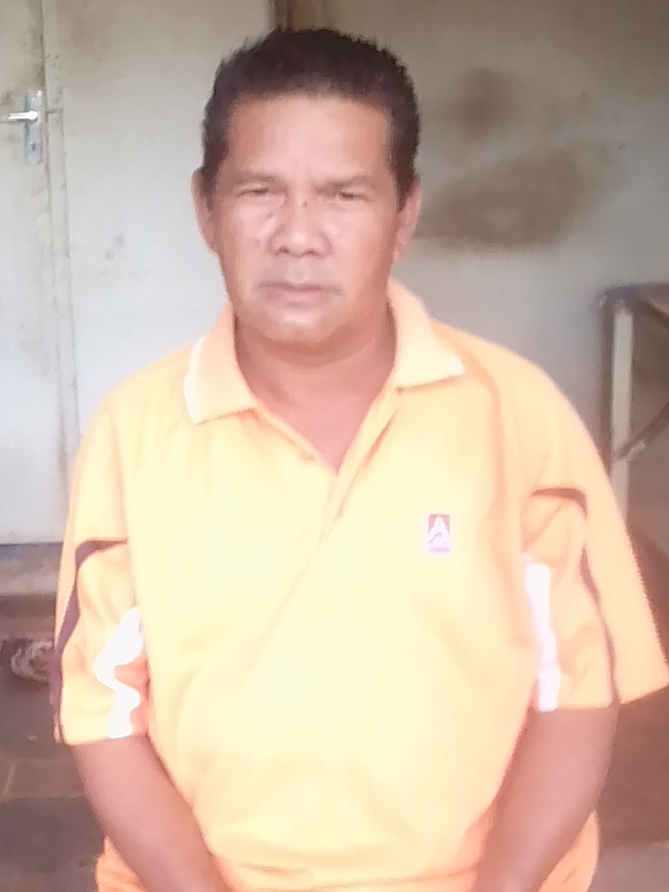
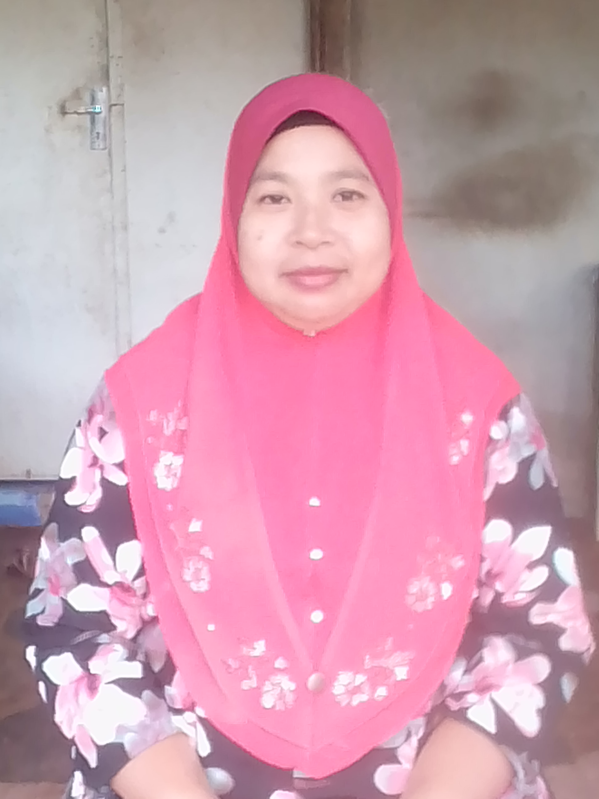
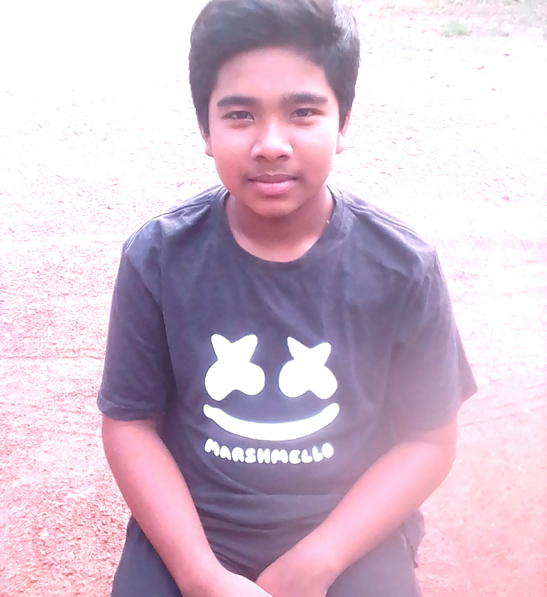

|

|
Abah
This is my father. I call him as abah because I love when I heard
children called their dad as abah. His name is Muhammad Radzi Bin Akib.
He is 50 years old.
He work as laborers. This is because he love to create something that
we not expect. He love to renovate my house. Many people will ask him to
renovate their house because my father's work is very perfect and beautiful.Not only that,
my father is a funny person. This is because he always make a joke or funny thing at home.
He always know how to make me laugh. He also kind hearted person because he love to help
people who need help. So, I am proud to be his daughter.
I love him very much because he always being by my side when I need someone to
talk to. I love you abah.
Kakak love Abah
|

|
Mak
This is my mother. Her name is Siti Faridah Binti Halim. I called her as mak. She is 43 years old.
She is housewife. But now my mother is a babysitter. My mother has been taking care of the child since he was a month.
The child's mother needs to work. That's why my mom helped take care of the child.
His name is Ummar Harith. My mother took care of him with love like her own child. My mom is a very caring person.
My mom is also very good at cooking. She often cooks delicious food. I love my mother very much because she is my life's amplifier.
I love you mak.
Kakak love Mak
|
|

|
Adik
This is my little brother. He is only my brother because only two of us in my siblings.
His name is Mohd Alif Haikal Bin Muhammad Radzi. He is 15 years old.
He is clever boy. He got 4A's in his UPSR. In secondary school. he
always got second place in his classroom. He is study in first
classroom. He also kind person because he always help me at home.
He also my handsome boy because he really takes care of his appearance especially his hair.
I love him so much because he always helped me take care of my parents when I was in university.
I hope he will be a successful person in future. As his sister, I hope he
will get what he want for his future. Be a good son to our parent adik. I love you
so much.
Kakak love Adik
|